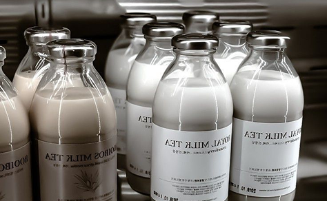

Твій стиль. Твоя вода. Твоя пляшка.
Дізнайся більше..
Дізнайся більше..
пляшка для кожного дня

“Обери те, що потрібно саме тобі”
Елегантні та зручні для щоденного використання. Скло не вбирає запахи й не впливає на смак води.
Матеріал: загартоване або боросилікатне скло.
Об'єм: 300–750 мл.
Легкі матеріали, зручні для повсякденного використання. Важливо перевіряти, чи підходить конкретна модель для гарячих напоїв.


Легкі, практичні та доступні в багатьох кольорах. Чудовий вибір для школи, тренувань і активного способу життя.
Матеріал: харчовий пластик або Tritan.
Об'єм: 400–1000 мл.
Термопляшки допомагають довше підтримувати напій гарячим або холодним.
Допомагає запобігти протіканню під час перенесення в сумці або рюкзаку.
Кришки з трубочкою, клапаном або широким отвором роблять використання комфортнішим.
Мінімалістичні, яскраві, пастельні та спортивні моделі — обирай стиль, який підходить саме тобі.